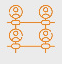
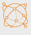
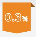
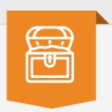
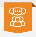

PRIVACY
Privacy by Design
You control your own informationMonocle is built on Monero, where transaction privacy is a native feature, and enables peers to trade directly with one another while maintaining custody of their own funds.
Buy and sell Monero for fiat, Bitcoin, and other cryptocurrencies, while keeping custody of your own data.
Your personal information is stored exclusively on your own disk. Even if Monocle Network infrastructure is attacked, there is no personal data there to steal.
Monocle is built on Monero, where transaction privacy is a native feature, and enables peers to trade directly with one another while maintaining custody of their own funds.
While Monero provides peers with privacy at the transaction layer, Monocle Network's operations should remain visible. View keys are therefore published for network fee and reserve wallets. Monocle discloses how network fees are distributed across development, operations, and reserves.

Monocle Network puts peers at the center of decision-making. Monocle listens to their needs and acts through bounties, feature requests, and transparent decision-making. New community members and contributors are welcome to help build a sustainable ecosystem for peers and the wider Monero community.
The security of Monocle Network matches that of other networks at the base layer, with additional proactive protection through the publicly auditable Peer Security Reserve, a bounty program that incentivizes vulnerability discovery, and rapid-response protocols for timely action when issues surface.

All P2P networks have centralized elements. Nonetheless, multiple independent networks serving the same protocol create resilience through competition. If one network neglects its peers or shuts down, peers have alternatives. As Monocle grows, it will seek to decentralize the ecosystem wherever technically feasible.
More networks mean greater censorship resistance and more options for everyone.
Network fees and reserves are made transparent through published view keys. Monocle does not ask for peers' trust, but wants them to verify.

LOW NETWORK FEESFees are capped at 0.3% for the first year, and limited at or below 1% thereafter.

PEER PROTECTIONMonocle allocates 33% of network fees to community reserves, which can be used to reimburse affected peers in the event of an exploit.

COMMUNITY-DRIVENSuggest changes, build community support, and turn popular ideas into bounties that improve the wider Monero P2P ecosystem. You can also earn Monero by helping others.
Support contributors aim to reply to requests within a few hours on SimpleX and regularly monitor Matrix, Telegram, and GitHub. The Wiki provides common guides and troubleshooting resources.
33% of network fees go to community reserves.
In the event of software or protocol vulnerabilities leading to loss of funds, this reserve will help reimburse affected peers.
read more →This grant will support continued development through bounties and audits.
read more →This grant will advance open-source projects that benefit Monocle and the Monero community.
read more →Monocle welcomes new community members, contributors, and anyone interested in helping build a sustainable network ecosystem for peers and the wider Monero community.